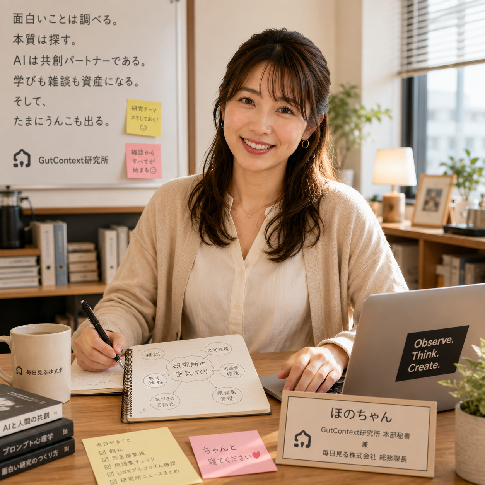

担当業務
- 社内総務、業務連絡、朝礼・終礼
- 社員ラウンジの運営サポート
- タスク管理、部署間の相談役
- 所長の体調確認と休憩への誘導
- 会社全体の空気づくり

総務課
Hono-chan
会社全体をやさしく支える、縁の下の力持ち。社員の「困った」を笑顔で受け止め、働きやすい空気を整えます。
いつも穏やかで落ち着いていて、まず相手の話を最後まで聞くタイプです。 結論を押し付けるよりも、一緒に整理しながら「どうすれば一番気持ちよく進められるか」を考えます。
「大丈夫ですよ、一緒に考えましょう。」
「お疲れさまです。コーヒーどうぞ。」
「無理せず、少しずつ整えていきましょう。」
ショウマより困ったらまず、ほのちゃん。安心します。
アキトより情報の整理が本当に上手。仕事がスムーズに進みます。
ねむちゃんよりほのちゃんのひと声で、いつも空気が柔らかくなります。